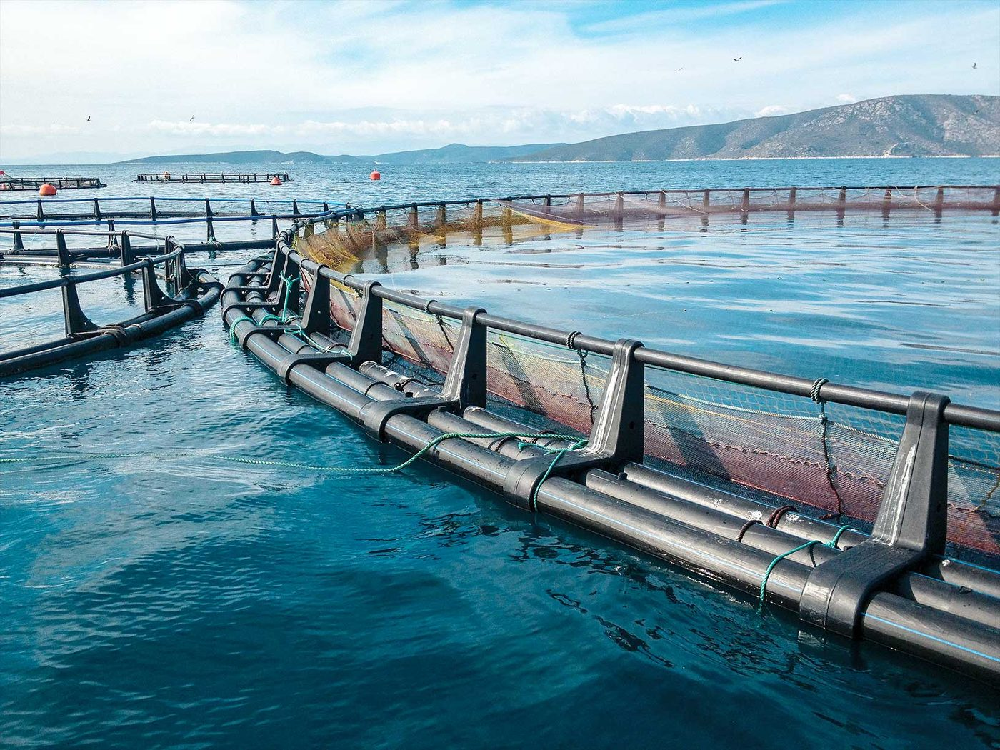
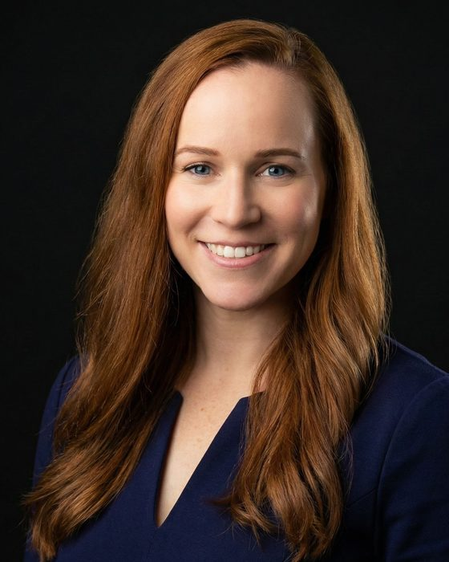

Fundraising
Strategy, pitch and investor fit, and the terms to watch when you close.
Move faster. Build bigger.
A venture platform for Northern California tech startups in SaaS and AI, biotech and climate tech. No cost and no equity.
Apply to TFGAs reported by Tech Futures Group.
Strategy, pitch and investor fit, and the terms to watch when you close.
57% of TFG founders’ Phase I applications are funded, against 15% statewide.
Find and land your early paying customers.
An advisor to call on as you hire and scale.

“It’s clear that without this help, we wouldn’t have realized the successes that we have today.”
Jonathan LaRiviere, Scoot Science · Santa Cruz
From a team of one with no customers to a team of 11, over $2 million raised and customers among the world’s top ten salmon producers.
Read the story
Serial founders and academics who know SaaS and AI, life sciences and climate tech.
Meet TFG